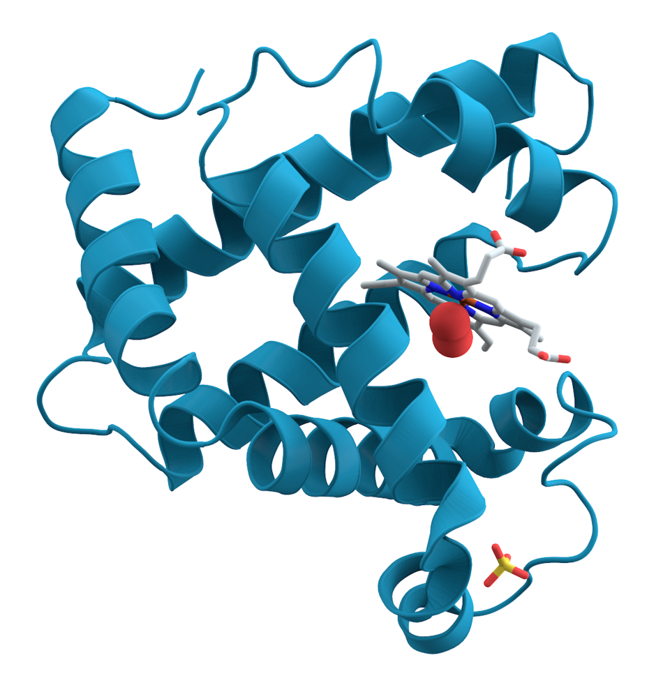

Защо изследователи прекарват години в игри? Защото игрите са идеална тренировъчна площадка: ясни правила, ясен резултат и безброй опити. Идеите оттам — невронни мрежи, учене от опит, проверка чрез търсене — отиват по-далеч, макар всяка нова задача да иска свои методи.

Белтъците в тялото ни са дълги вериги, които се нагъват в сложни триизмерни форми, а формата определя какво правят. Десетилетия наред учените определят тези форми с месеци или години работа. На снимката: миоглобин, първият белтък с разгадана форма.
Първата версия на AlphaFold участва в състезание по предсказване на белтъци през 2018 г., а през 2020 г. AlphaFold 2 на DeepMind — лабораторията, създала AlphaGo — започва да предсказва много от тях с точност, близка до експерименталната. Днес базата данни на AlphaFold съдържа предсказания за над 200 милиона белтъка. През 2024 г. Демис Хасабис и Джон Джъмпър получават Нобелова награда за химия, заедно с Дейвид Бейкър.
Великите открития не са само история. Следващото може да започне с твой въпрос.